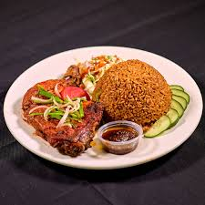
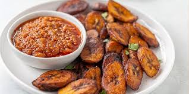
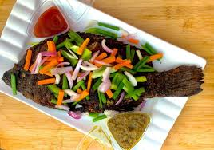
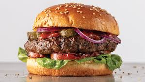

About Us
At AM.FF Restaurant, we're passionate about serving delicious local and international dishes that bring people together. Whether you're craving jollof rice, fried plantains, or something beyond Ghanaian flavors, we've got you! Come vibe with us, enjoy great food, and make memories.
Mission
To delight customers with tasty, authentic food and warm hospitality, using fresh ingredients and love in every dish.
Vision
We're on a mission to be Ghana's number 1 food spot! We want you to rave about our crazy tasty dishes and top-notch service. Think: “Best jollof rice in Accra? AM.FF all the way!”
Hungry yet?
Check out our top picks
-
Ghanaian Jollof Rice - Our twist on the classic!

-
Spicy Fried Plantains - Crunchy goodness

-
Grilled Tilapia - Frsh from the coast!

-
Italian Pizza - Melty cheese,fresh toppings!

-
Indian Chicken Curry - Rich spices, flovorful bites!

-
American burgers - Juicy patties,cripsy buns!

Get Your Food Fix
- Open 24/7 -Mondays to SSundays anytime!
- Delivery Available -We nring food to your door.
- Dine-in & Takeaway - Grab & go or Chill with us!
- Catering Services -Big events? We've got you!
Get In Touch
- Call us: 0536814125
- Location:Accra,Ghana(near Pilma Hotel)
- Email:info@amffrestaurant.com